Home buyers
Know the condition of the home before you commit. You get a full inspection, clear photos and practical next steps within 24 hours.
Schedule a buyer's inspection →Serving MD · PA · DC · WV
For buyers, sellers and homeowners.
Trusted home inspection experts delivering detailed findings, clear photos and a practical digital report before your next property decision.
24-hour turnaroundClear color photos and practical findings delivered fast.
Appointments all weekFlexible scheduling for tight real estate timelines.
Experienced guidanceSeasoned insight across homes, systems and property conditions.
Professional coverageErrors and omissions insurance for added confidence.
Fast7-day scheduling, report in 24 hours
Trusted25+ years experience, E&O insured
AccurateInfrared imaging and photo-backed findings
Inspection services
Choose a service to see how CHI helps buyers, sellers and real estate professionals understand the home before the next decision.
Who we serve
Know the condition of the home before you commit. You get a full inspection, clear photos and practical next steps within 24 hours.
Schedule a buyer's inspection →Find issues before you list, so you can repair or disclose them and the buyer's inspection holds fewer surprises.
Schedule a pre-listing inspection →Appointments all week and 24-hour reports keep contract timelines on track. Reports are shared with the people your client authorizes.
Call 301-788-6608 →What inspections uncover
Problems like these are easy to miss on a walkthrough. Each card shows what was found and why it matters.
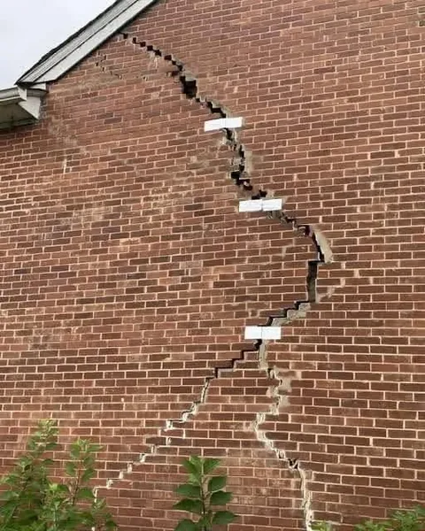
Structure
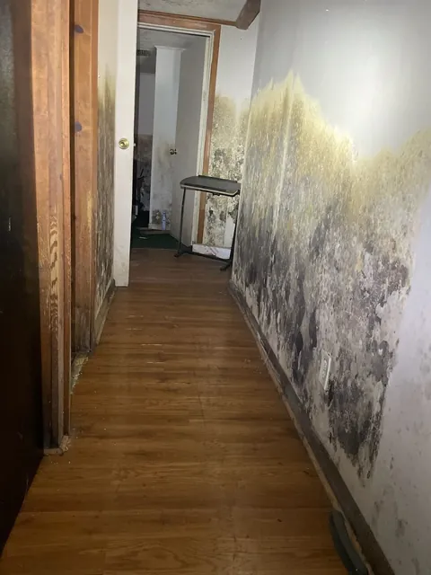
Moisture & mold
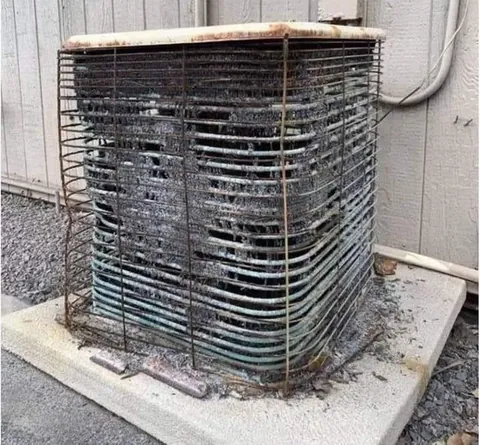
Heating & cooling

Roof & attic
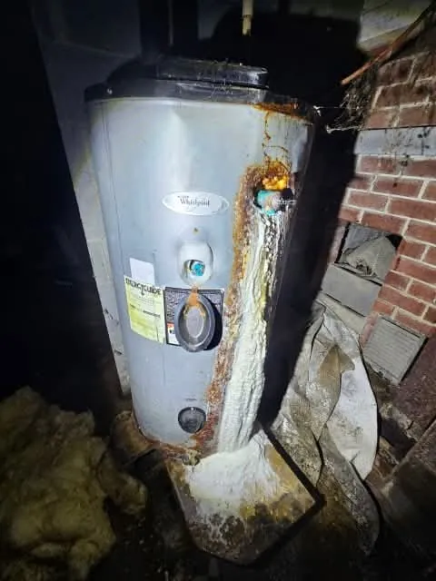
Plumbing
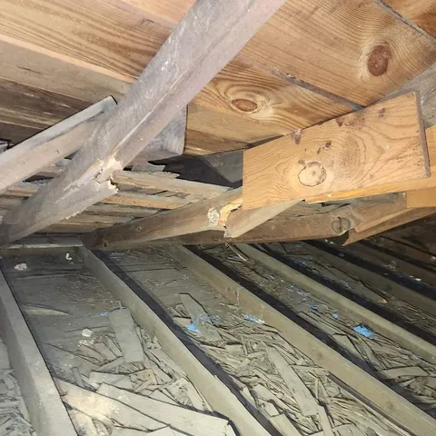
Structure

Moisture & mold

Heating & cooling

Structure
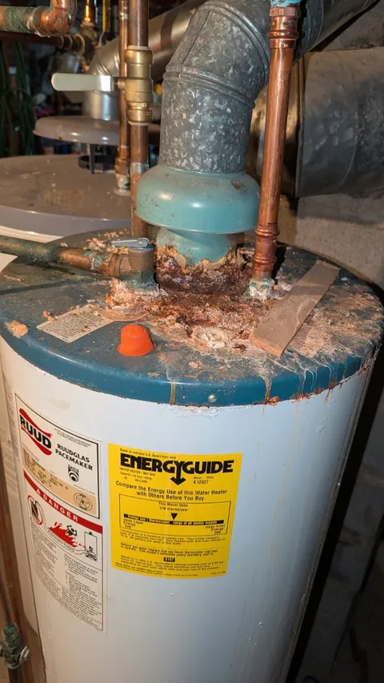
Plumbing
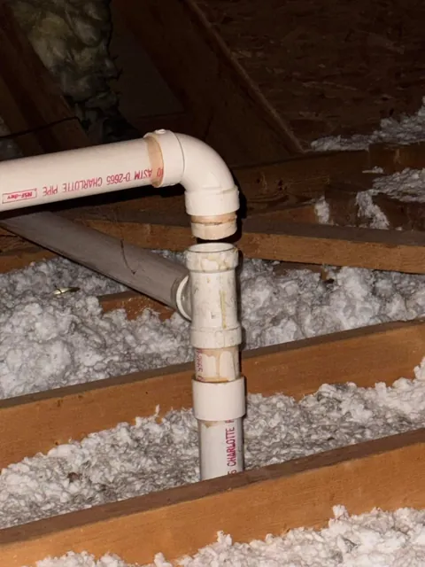
Plumbing
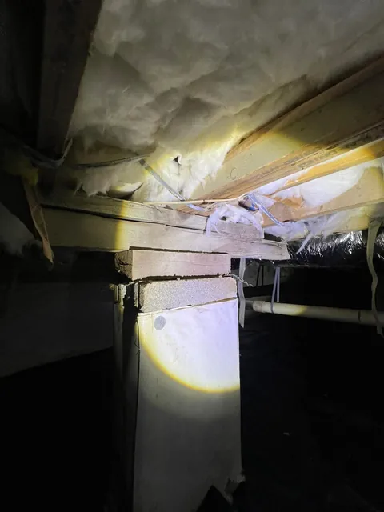
Structure

Heating & cooling
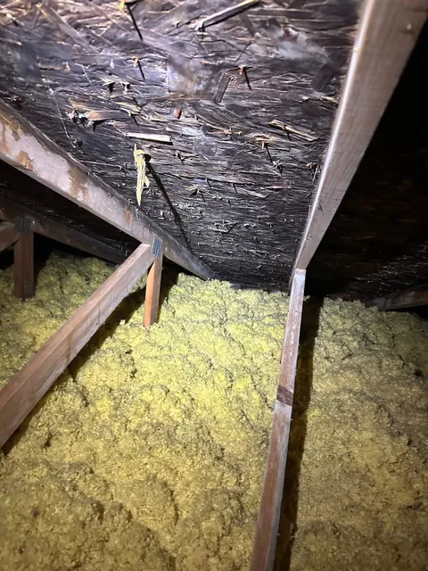
Roof & attic
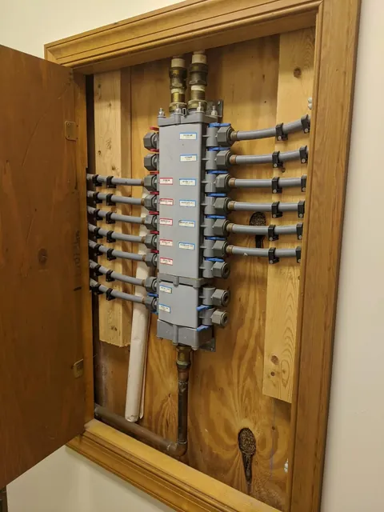
Plumbing
Photos are examples of conditions a home inspection can uncover. Every home is different, and your report covers the specific findings at your property.
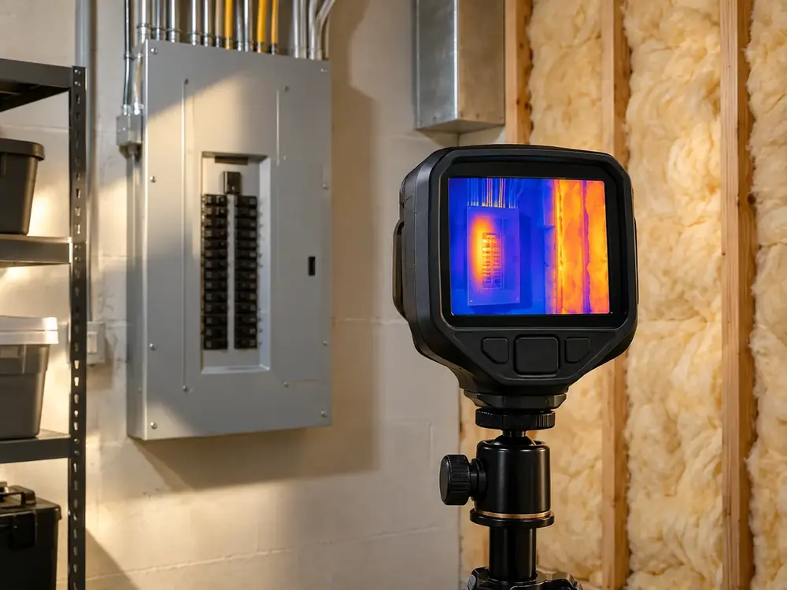
Temperature differences can help guide a closer look at electrical, insulation and moisture concerns.
Reports made for real decisions
CHI documents findings with color photos and straightforward context. The goal is not to alarm you—it is to help you prioritize with confidence.
Every important observation is easier to locate and understand.
Open your report from your phone and share it with your agent when needed.
We walk through priorities and remain available after the inspection.
Client experience
“The findings were explained clearly, and the photos made it easy to understand what needed attention.”
Homebuyer review
“Scheduling was straightforward, the inspection felt thorough, and every question was welcomed.”
Homeowner review
“The report was organized, practical and easy to share during the real estate transaction.”
Real estate professional review
Schedule an appointment
Pick a time on the online scheduler. CHI confirms the appointment with you.
Prefer to call?301-788-6608No payment is required to request an appointment.